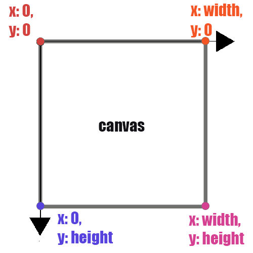

Coordinates System
Definition
In DanceON, all shapes drawn to the screen have a position that is specified as a coordinate. All coordinates are measured as the distance from the origin in units of pixels. The coordinates are represented as x and y in DanceON. x represents where the object is on the horizontal axis, and y represents where the object is on the vertical axis. At the origin, being the upper left of the window, both the coordinate x and coordinate y are 0. At the lower right of the window, x is width, and y is height.
As a result, the coordinates system in dance on could be understand as Figure 1.

These x and y expressions are universal in the languages for DanceON. It is common to find x and y used to express things related to the coordinates systems.
When you see x and y at the beginning of a line where they appear by themselves such as “x:” or “y:”, it means you are defining the location of the object you are currently programming.
However, the x and y are also used to express some pre-defined location variables for poses. For instance, you may see the names for poses are called something like “pose.nose.x” or “pose.leftWrist.y”. When the x and y appears as suffix after body parts names, they are used to express the specific numbers of coordinates of the body parts at different times.
Why would you also use x and y for “pose.nose.x” and “pose.leftWrist.y” instead of numbers?
Observer the location of the poses’ keypoints (nose,leftWrist, leftEye, etc) on your DanceON canvas, you may easily find out that the locations of the key points change throughout the progression of your videos/webcam recordings. Because we are dealing with numbers that are constantly changing when referring to coordinates of the pose keypoints, it is easier to represent the location with variables(names for changing numbers).
Having x and y as the names indicates that they are in the same coordinates system with your object – “x:” or “y:”.
Exercise 1
Use one of the below code and design a 10 second movements around the shape. Take the clip as an example.
Example 1
The below code should draw a large circle at bottom left and a small circle at middle right.
(pose) => [
{
what: 'circle',
when: true,
where: {
x: 50,
y: 300
},
how:{
d:150,
fill:'blue'
}
},
{
what: 'circle',
when: true,
where: {
x: 500,
y: 200
},
how:{
d:50,
fill:'blue'
}
},
];Example 2
The below code should give you two pink wings.
(pose) => [
{
what: 'triangle',
when: true,
where: {
x1: pose.leftShoulder.x,
y1: pose.leftShoulder.y,
x2: pose.leftElbow.x,
y2: pose.leftElbow.y,
x3: pose.leftWrist.x+100,
y3: pose.leftEar.y-100
},
how: {
fill: color(255, 0, 255, 255),
stroke: 255,
strokeWeight: 10
}
},{
what: 'triangle',
when: true,
where: {
x1: pose.rightShoulder.x,
y1: pose.rightShoulder.y,
x2: pose.rightElbow.x,
y2: pose.rightElbow.y,
x3: pose.rightWrist.x-100,
y3: pose.rightEar.y-100
},
how: {
fill: color(255, 0, 255, 255),
stroke: 255,
strokeWeight: 10
}
},
];Exercise 2
Use the window below, manipulate the code, and design a few-seconds movement around the shapes based on your manipulation. What feels different? What do you like?
Exercise 3
Think of a movement, and design a piece of code with that movement in mind.